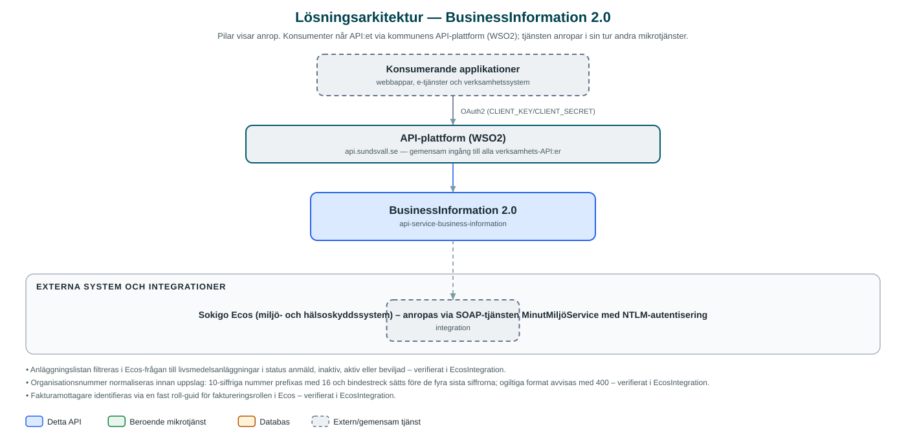

BusinessInformation
Uppgifter om livsmedelsanläggningar – anläggningsdetaljer, livsmedelsverksamhet och faktureringsuppgifter – hämtade direkt ur miljösystemet Ecos.
Om API:et
BusinessInformation exponerar uppgifter om företags livsmedelsanläggningar ur kommunens miljö- och hälsoskyddssystem Ecos (Sokigo). API:et kan lista ett företags anläggningar utifrån organisationsnummer samt hämta detaljer om en enskild anläggning: adress och kontaktpersoner, uppgifter om livsmedelsverksamheten och faktureringsuppgifter.
API:et följer den nationella specifikationen FörRätt – Livsmedelsverkets standard för kommunala digitala tjänster för registrering och riskklassning av livsmedelsverksamheter – vilket syns i de svenskspråkiga resurserna (anläggningar, livsmedelsverksamhet, fakturering). Det gör att e-tjänster byggda mot FörRätt kan hämta sina uppgifter från kommunen på ett standardiserat sätt.
Tjänsten lagrar ingenting själv utan hämtar allt i realtid från Ecos via systemets SOAP-gränssnitt.
Det här gör API:et
- Anläggningar per företag – Listar ett företags livsmedelsanläggningar utifrån organisationsnummer.
- Anläggningsdetaljer – Hämtar detaljer om en anläggning, inklusive adress och kontaktpersoner.
- Livsmedelsverksamhet – Hämtar uppgifter om verksamheten vid en anläggning, för bland annat riskklassning.
- Faktureringsuppgifter – Hämtar faktureringsuppgifter kopplade till en anläggning, inklusive fakturamottagare.
- FörRätt-standarden – Resurserna följer Livsmedelsverkets nationella API-specifikation FörRätt.
API-dokumentation
API:ets samtliga resurser, parametrar och datamodeller finns beskrivna i en OpenAPI-specifikation som är hämtad ur källkodsförrådet. Den kan utforskas interaktivt i Swagger UI eller laddas ner som YAML. Programvaruförteckningen (SBOM) listar tjänstens samtliga tredjepartskomponenter med version och licens.
Teknisk dokumentation
Nedan beskrivs hur tjänsten är uppbyggd, vilka andra tjänster den anropar och vad som krävs för att driftsätta den. Informationen är härledd ur källkoden och dess konfiguration på GitHub.
Arkitektur

API:et är en mikrotjänst (Java 25, Spring Boot via kommunens gemensamma tjänsteplattform dept44 (8.0.8), byggd med Maven). Konsumenter når tjänsten via kommunens gemensamma API-plattform (WSO2) på api.sundsvall.se – tjänsten anropas aldrig direkt. Övriga integrationer som förekommer i koden: Sokigo Ecos (miljö- och hälsoskyddssystem) – anropas via SOAP-tjänsten MinutMiljöService med NTLM-autentisering.
Teknikstack
- Språk: Java 25
- Ramverk: Spring Boot via kommunens gemensamma tjänsteplattform dept44 (8.0.8), byggd med Maven
- Övrigt: SOAP-klient genererad ur incheckad WSDL (MinutMiljoService), Feign med NTLM-autentisering mot Ecos
Beroenden till andra mikrotjänster
Inga anrop till andra mikrotjänster hittades i källkodens konfiguration.
Programvaruförteckning
Tjänsten bygger på 223 tredjepartskomponenter fördelade på 11 olika licenser. Till skillnad från tabellen ovan, som listar andra mikrotjänster, avses här de programbibliotek som ingår i bygget. Se programvaruförteckningen för hela listan.
Konfiguration och driftsättning
- application.yml med URL samt användarnamn och lösenord (NTLM) för Ecos SOAP-gränssnitt
- Timeout-inställningar för Ecos-anropen
- Ingen databas att konfigurera – tjänsten är helt läsande
- Anrop görs per kommun – municipalityId ingår i alla API-vägar
Noterbart ur källkoden
- Anläggningslistan filtreras i Ecos-frågan till livsmedelsanläggningar i status anmäld, inaktiv, aktiv eller beviljad – verifierat i EcosIntegration.
- Organisationsnummer normaliseras innan uppslag: 10-siffriga nummer prefixas med 16 och bindestreck sätts före de fyra sista siffrorna; ogiltiga format avvisas med 400 – verifierat i EcosIntegration.
- Fakturamottagare identifieras via en fast roll-guid för faktureringsrollen i Ecos – verifierat i EcosIntegration.
- SOAP-klienten genereras vid bygget ur den incheckade WSDL-filen för MinutMiljöService; autentiseringen mot Ecos sker med NTLM, inte OAuth2.
Källkod
Källkoden är öppen och finns hos Sundsvalls kommun på GitHub. I källkodsförrådet finns även instruktioner för att klona, konfigurera och starta tjänsten i egen miljö.